import numpy as np
import pandas as pd
import matplotlib.pyplot as plt
import tensorflow as tf
from tensorflow import kerasModul 7 Sains Data: Klasifikasi Gambar dan Pengantar Convolution Neural Network
Klasifikasi Gambar dengan Neural Network
Offline di Departemen Matematika
Kembali ke Sains Data
Klasifikasi Gambar dengan flatten
Gambar atau citra (image) adalah sekumpulan pixel yang disusun secara dua dimensi. Sejauh ini, neural network yang kita pelajari memiliki satu input layer yang “flat” atau datar. Sehingga, apabila kita ingin meng-input data citra ke dalam neural network, caranya adalah dengan flatten, yaitu data citra yang mula-mula dua dimensi itu disusun ulang menjadi satu dimensi.
Di Keras, ada layer istimewa untuk melakukan flatten untuk gambar berukuran a kali b pixel:
keras.layers.Flatten(input_shape = (a, b))
Ketika berurusan dengan data citra, layer ini menggantikan InputLayer yang biasa kita gunakan.
Persiapan dataset Fashion MNIST
Mari kita coba menggunakan dataset Fashion MNIST yang sudah tersedia dari Keras:
fashion_mnist = keras.datasets.fashion_mnist
(X_train_full, y_train_full), (X_test, y_test) = fashion_mnist.load_data()print(f'X_train_full shape: {X_train_full.shape}')
print(f'y_train_full shape: {y_train_full.shape}')
print(f'X_test shape: {X_test.shape}')
print(f'y_test shape: {y_test.shape}')X_train_full shape: (60000, 28, 28)
y_train_full shape: (60000,)
X_test shape: (10000, 28, 28)
y_test shape: (10000,)from sklearn.model_selection import train_test_split
X_train, X_val, y_train, y_val = train_test_split(
X_train_full, y_train_full, test_size=1/6, random_state=42
)
print(f'X_train shape: {X_train.shape}')
print(f'y_train shape: {y_train.shape}')
print(f'X_val shape: {X_val.shape}')
print(f'y_val shape: {y_val.shape}')
print(f'X_test shape: {X_test.shape}')
print(f'y_test shape: {y_test.shape}')X_train shape: (50000, 28, 28)
y_train shape: (50000,)
X_val shape: (10000, 28, 28)
y_val shape: (10000,)
X_test shape: (10000, 28, 28)
y_test shape: (10000,)X_train = X_train / 255
X_val = X_val / 255
X_test = X_test / 255Ada 10 kelas:
print(set(y_train)){np.uint8(0), np.uint8(1), np.uint8(2), np.uint8(3), np.uint8(4), np.uint8(5), np.uint8(6), np.uint8(7), np.uint8(8), np.uint8(9)}class_names = ["T-shirt/top", "Trouser", "Pullover", "Dress", "Coat",
"Sandal", "Shirt", "Sneaker", "Bag", "Ankle boot"]print(len(class_names))10Kita lihat salah satu gambarnya:
#@title Slider to look for some image examples {run: "auto"}
idx = 13779 #@param {type:"slider", min:0, max:49999, step:1}
plt.imshow(X_train[idx], cmap='gray')
plt.title(class_names[y_train[idx]])
plt.axis('OFF')
plt.show()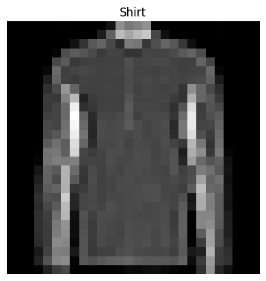
Menyusun neural network dan training
keras.backend.clear_session()model = keras.Sequential(
[
keras.layers.Flatten(input_shape=(28,28)),
keras.layers.Dense(units=100, activation=keras.activations.relu),
keras.layers.Dense(units=50, activation=keras.activations.relu),
keras.layers.Dense(units=10, activation=keras.activations.softmax)
]
)/usr/local/lib/python3.12/dist-packages/keras/src/layers/reshaping/flatten.py:37: UserWarning: Do not pass an `input_shape`/`input_dim` argument to a layer. When using Sequential models, prefer using an `Input(shape)` object as the first layer in the model instead.
super().__init__(**kwargs)model.compile(
optimizer = keras.optimizers.Adam(learning_rate = 0.001),
loss = keras.losses.SparseCategoricalCrossentropy(),
metrics = [keras.metrics.CategoricalAccuracy()]
)model.summary()Model: "sequential"
┏━━━━━━━━━━━━━━━━━━━━━━━━━━━━━━━━━┳━━━━━━━━━━━━━━━━━━━━━━━━┳━━━━━━━━━━━━━━━┓ ┃ Layer (type) ┃ Output Shape ┃ Param # ┃ ┡━━━━━━━━━━━━━━━━━━━━━━━━━━━━━━━━━╇━━━━━━━━━━━━━━━━━━━━━━━━╇━━━━━━━━━━━━━━━┩ │ flatten (Flatten) │ (None, 784) │ 0 │ ├─────────────────────────────────┼────────────────────────┼───────────────┤ │ dense (Dense) │ (None, 100) │ 78,500 │ ├─────────────────────────────────┼────────────────────────┼───────────────┤ │ dense_1 (Dense) │ (None, 50) │ 5,050 │ ├─────────────────────────────────┼────────────────────────┼───────────────┤ │ dense_2 (Dense) │ (None, 10) │ 510 │ └─────────────────────────────────┴────────────────────────┴───────────────┘
Total params: 84,060 (328.36 KB)
Trainable params: 84,060 (328.36 KB)
Non-trainable params: 0 (0.00 B)
history1 = model.fit(
X_train, y_train, validation_data=(X_val, y_val),
epochs=50, batch_size=256
)Epoch 1/50
196/196 ━━━━━━━━━━━━━━━━━━━━ 3s 8ms/step - categorical_accuracy: 0.0698 - loss: 0.6786 - val_categorical_accuracy: 0.0660 - val_loss: 0.4998
Epoch 2/50
196/196 ━━━━━━━━━━━━━━━━━━━━ 1s 6ms/step - categorical_accuracy: 0.0683 - loss: 0.4369 - val_categorical_accuracy: 0.0675 - val_loss: 0.4173
Epoch 3/50
196/196 ━━━━━━━━━━━━━━━━━━━━ 2s 10ms/step - categorical_accuracy: 0.0664 - loss: 0.3940 - val_categorical_accuracy: 0.0701 - val_loss: 0.3970
Epoch 4/50
196/196 ━━━━━━━━━━━━━━━━━━━━ 2s 7ms/step - categorical_accuracy: 0.0557 - loss: 0.3605 - val_categorical_accuracy: 0.0700 - val_loss: 0.3866
Epoch 5/50
196/196 ━━━━━━━━━━━━━━━━━━━━ 1s 6ms/step - categorical_accuracy: 0.0653 - loss: 0.3434 - val_categorical_accuracy: 0.0649 - val_loss: 0.3843
Epoch 6/50
196/196 ━━━━━━━━━━━━━━━━━━━━ 1s 6ms/step - categorical_accuracy: 0.0589 - loss: 0.3280 - val_categorical_accuracy: 0.0690 - val_loss: 0.3788
Epoch 7/50
196/196 ━━━━━━━━━━━━━━━━━━━━ 1s 7ms/step - categorical_accuracy: 0.0673 - loss: 0.3126 - val_categorical_accuracy: 0.0696 - val_loss: 0.3475
Epoch 8/50
196/196 ━━━━━━━━━━━━━━━━━━━━ 1s 6ms/step - categorical_accuracy: 0.0643 - loss: 0.3010 - val_categorical_accuracy: 0.0654 - val_loss: 0.3523
Epoch 9/50
196/196 ━━━━━━━━━━━━━━━━━━━━ 1s 6ms/step - categorical_accuracy: 0.0686 - loss: 0.2884 - val_categorical_accuracy: 0.0696 - val_loss: 0.3484
Epoch 10/50
196/196 ━━━━━━━━━━━━━━━━━━━━ 1s 6ms/step - categorical_accuracy: 0.0661 - loss: 0.2821 - val_categorical_accuracy: 0.0704 - val_loss: 0.3409
Epoch 11/50
196/196 ━━━━━━━━━━━━━━━━━━━━ 1s 7ms/step - categorical_accuracy: 0.0650 - loss: 0.2741 - val_categorical_accuracy: 0.0698 - val_loss: 0.3412
Epoch 12/50
196/196 ━━━━━━━━━━━━━━━━━━━━ 2s 11ms/step - categorical_accuracy: 0.0672 - loss: 0.2669 - val_categorical_accuracy: 0.0683 - val_loss: 0.3273
Epoch 13/50
196/196 ━━━━━━━━━━━━━━━━━━━━ 1s 7ms/step - categorical_accuracy: 0.0613 - loss: 0.2605 - val_categorical_accuracy: 0.0684 - val_loss: 0.3205
Epoch 14/50
196/196 ━━━━━━━━━━━━━━━━━━━━ 1s 6ms/step - categorical_accuracy: 0.0690 - loss: 0.2531 - val_categorical_accuracy: 0.0695 - val_loss: 0.3253
Epoch 15/50
196/196 ━━━━━━━━━━━━━━━━━━━━ 1s 6ms/step - categorical_accuracy: 0.0617 - loss: 0.2470 - val_categorical_accuracy: 0.0705 - val_loss: 0.3369
Epoch 16/50
196/196 ━━━━━━━━━━━━━━━━━━━━ 1s 6ms/step - categorical_accuracy: 0.0602 - loss: 0.2412 - val_categorical_accuracy: 0.0685 - val_loss: 0.3241
Epoch 17/50
196/196 ━━━━━━━━━━━━━━━━━━━━ 1s 6ms/step - categorical_accuracy: 0.0716 - loss: 0.2356 - val_categorical_accuracy: 0.0697 - val_loss: 0.3283
Epoch 18/50
196/196 ━━━━━━━━━━━━━━━━━━━━ 1s 6ms/step - categorical_accuracy: 0.0697 - loss: 0.2277 - val_categorical_accuracy: 0.0661 - val_loss: 0.3234
Epoch 19/50
196/196 ━━━━━━━━━━━━━━━━━━━━ 1s 6ms/step - categorical_accuracy: 0.0618 - loss: 0.2259 - val_categorical_accuracy: 0.0696 - val_loss: 0.3332
Epoch 20/50
196/196 ━━━━━━━━━━━━━━━━━━━━ 1s 6ms/step - categorical_accuracy: 0.0565 - loss: 0.2188 - val_categorical_accuracy: 0.0672 - val_loss: 0.3397
Epoch 21/50
196/196 ━━━━━━━━━━━━━━━━━━━━ 2s 10ms/step - categorical_accuracy: 0.0687 - loss: 0.2156 - val_categorical_accuracy: 0.0676 - val_loss: 0.3200
Epoch 22/50
196/196 ━━━━━━━━━━━━━━━━━━━━ 2s 6ms/step - categorical_accuracy: 0.0668 - loss: 0.2110 - val_categorical_accuracy: 0.0672 - val_loss: 0.3446
Epoch 23/50
196/196 ━━━━━━━━━━━━━━━━━━━━ 1s 6ms/step - categorical_accuracy: 0.0670 - loss: 0.2070 - val_categorical_accuracy: 0.0701 - val_loss: 0.3395
Epoch 24/50
196/196 ━━━━━━━━━━━━━━━━━━━━ 1s 6ms/step - categorical_accuracy: 0.0621 - loss: 0.2030 - val_categorical_accuracy: 0.0678 - val_loss: 0.3391
Epoch 25/50
196/196 ━━━━━━━━━━━━━━━━━━━━ 1s 7ms/step - categorical_accuracy: 0.0676 - loss: 0.1956 - val_categorical_accuracy: 0.0695 - val_loss: 0.3303
Epoch 26/50
196/196 ━━━━━━━━━━━━━━━━━━━━ 1s 6ms/step - categorical_accuracy: 0.0741 - loss: 0.1936 - val_categorical_accuracy: 0.0701 - val_loss: 0.3368
Epoch 27/50
196/196 ━━━━━━━━━━━━━━━━━━━━ 2s 11ms/step - categorical_accuracy: 0.0633 - loss: 0.1875 - val_categorical_accuracy: 0.0684 - val_loss: 0.3445
Epoch 28/50
196/196 ━━━━━━━━━━━━━━━━━━━━ 2s 8ms/step - categorical_accuracy: 0.0698 - loss: 0.1850 - val_categorical_accuracy: 0.0693 - val_loss: 0.3387
Epoch 29/50
196/196 ━━━━━━━━━━━━━━━━━━━━ 2s 10ms/step - categorical_accuracy: 0.0625 - loss: 0.1816 - val_categorical_accuracy: 0.0694 - val_loss: 0.3357
Epoch 30/50
196/196 ━━━━━━━━━━━━━━━━━━━━ 2s 6ms/step - categorical_accuracy: 0.0701 - loss: 0.1792 - val_categorical_accuracy: 0.0688 - val_loss: 0.3369
Epoch 31/50
196/196 ━━━━━━━━━━━━━━━━━━━━ 1s 6ms/step - categorical_accuracy: 0.0685 - loss: 0.1806 - val_categorical_accuracy: 0.0695 - val_loss: 0.3387
Epoch 32/50
196/196 ━━━━━━━━━━━━━━━━━━━━ 1s 6ms/step - categorical_accuracy: 0.0614 - loss: 0.1714 - val_categorical_accuracy: 0.0668 - val_loss: 0.3679
Epoch 33/50
196/196 ━━━━━━━━━━━━━━━━━━━━ 1s 6ms/step - categorical_accuracy: 0.0638 - loss: 0.1720 - val_categorical_accuracy: 0.0679 - val_loss: 0.3603
Epoch 34/50
196/196 ━━━━━━━━━━━━━━━━━━━━ 1s 6ms/step - categorical_accuracy: 0.0742 - loss: 0.1673 - val_categorical_accuracy: 0.0696 - val_loss: 0.3412
Epoch 35/50
196/196 ━━━━━━━━━━━━━━━━━━━━ 1s 6ms/step - categorical_accuracy: 0.0711 - loss: 0.1609 - val_categorical_accuracy: 0.0693 - val_loss: 0.3465
Epoch 36/50
196/196 ━━━━━━━━━━━━━━━━━━━━ 1s 6ms/step - categorical_accuracy: 0.0684 - loss: 0.1585 - val_categorical_accuracy: 0.0699 - val_loss: 0.3545
Epoch 37/50
196/196 ━━━━━━━━━━━━━━━━━━━━ 2s 8ms/step - categorical_accuracy: 0.0647 - loss: 0.1565 - val_categorical_accuracy: 0.0708 - val_loss: 0.3642
Epoch 38/50
196/196 ━━━━━━━━━━━━━━━━━━━━ 2s 12ms/step - categorical_accuracy: 0.0606 - loss: 0.1554 - val_categorical_accuracy: 0.0685 - val_loss: 0.3648
Epoch 39/50
196/196 ━━━━━━━━━━━━━━━━━━━━ 1s 6ms/step - categorical_accuracy: 0.0656 - loss: 0.1482 - val_categorical_accuracy: 0.0673 - val_loss: 0.3782
Epoch 40/50
196/196 ━━━━━━━━━━━━━━━━━━━━ 1s 7ms/step - categorical_accuracy: 0.0651 - loss: 0.1472 - val_categorical_accuracy: 0.0697 - val_loss: 0.3698
Epoch 41/50
196/196 ━━━━━━━━━━━━━━━━━━━━ 1s 7ms/step - categorical_accuracy: 0.0613 - loss: 0.1438 - val_categorical_accuracy: 0.0711 - val_loss: 0.3901
Epoch 42/50
196/196 ━━━━━━━━━━━━━━━━━━━━ 1s 7ms/step - categorical_accuracy: 0.0613 - loss: 0.1454 - val_categorical_accuracy: 0.0700 - val_loss: 0.3762
Epoch 43/50
196/196 ━━━━━━━━━━━━━━━━━━━━ 3s 7ms/step - categorical_accuracy: 0.0614 - loss: 0.1397 - val_categorical_accuracy: 0.0690 - val_loss: 0.3794
Epoch 44/50
196/196 ━━━━━━━━━━━━━━━━━━━━ 3s 9ms/step - categorical_accuracy: 0.0637 - loss: 0.1374 - val_categorical_accuracy: 0.0681 - val_loss: 0.3697
Epoch 45/50
196/196 ━━━━━━━━━━━━━━━━━━━━ 2s 10ms/step - categorical_accuracy: 0.0671 - loss: 0.1332 - val_categorical_accuracy: 0.0688 - val_loss: 0.3806
Epoch 46/50
196/196 ━━━━━━━━━━━━━━━━━━━━ 2s 7ms/step - categorical_accuracy: 0.0675 - loss: 0.1328 - val_categorical_accuracy: 0.0702 - val_loss: 0.3839
Epoch 47/50
196/196 ━━━━━━━━━━━━━━━━━━━━ 2s 9ms/step - categorical_accuracy: 0.0616 - loss: 0.1304 - val_categorical_accuracy: 0.0695 - val_loss: 0.4103
Epoch 48/50
196/196 ━━━━━━━━━━━━━━━━━━━━ 2s 6ms/step - categorical_accuracy: 0.0674 - loss: 0.1248 - val_categorical_accuracy: 0.0709 - val_loss: 0.4015
Epoch 49/50
196/196 ━━━━━━━━━━━━━━━━━━━━ 1s 6ms/step - categorical_accuracy: 0.0632 - loss: 0.1300 - val_categorical_accuracy: 0.0694 - val_loss: 0.3914
Epoch 50/50
196/196 ━━━━━━━━━━━━━━━━━━━━ 1s 6ms/step - categorical_accuracy: 0.0605 - loss: 0.1206 - val_categorical_accuracy: 0.0702 - val_loss: 0.4124pd.DataFrame(history1.history).to_csv("./keras_sequential_history1.csv", index=False)Silakan download kalau mau menyocokkan/membandingkan dengan modul: keras_sequential_history1.csv
history1_df = pd.read_csv("./keras_sequential_history1.csv")plt.plot(history1_df["loss"], label = "training loss")
plt.plot(history1_df["val_loss"], label = "validation loss")
plt.xlabel("epoch")
plt.legend()
plt.show()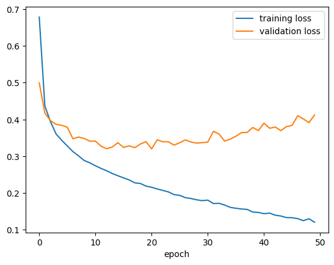
model.save("./keras_sequential_image_flatten.keras")Hasil prediksi
y_pred = model.predict(X_test)313/313 ━━━━━━━━━━━━━━━━━━━━ 1s 2ms/stepy_predarray([[2.3255573e-07, 6.8715373e-13, 4.8452992e-10, ..., 4.0070943e-05,
7.4082754e-11, 9.9995774e-01],
[2.4705474e-07, 6.3406563e-23, 9.9977636e-01, ..., 6.0544784e-22,
5.7611311e-16, 1.0497308e-19],
[6.9932263e-12, 9.9999994e-01, 4.9629018e-13, ..., 1.2882070e-20,
2.8977601e-15, 5.8007476e-17],
...,
[1.5269237e-09, 1.8880624e-23, 2.1215406e-10, ..., 6.3853453e-19,
9.9999994e-01, 4.3363592e-19],
[1.2524308e-11, 9.9999994e-01, 7.8069028e-14, ..., 3.6561142e-17,
4.2744394e-13, 8.9643435e-14],
[1.7552978e-08, 1.2925562e-15, 4.8392163e-08, ..., 5.8510761e-08,
4.5267003e-09, 1.2477504e-10]], dtype=float32)y_pred[123]array([6.4850452e-15, 9.5243375e-19, 2.5446429e-22, 1.2883222e-16,
5.1601930e-18, 1.2468863e-11, 5.3251053e-28, 3.6245498e-07,
2.2436268e-15, 9.9999958e-01], dtype=float32)np.argmax(y_pred[123])np.int64(9)Kita bisa melihat hasil prediksi:
#@title Slider to look for some prediction examples {run: "auto"}
idx = 4518 #@param {type:"slider", min:0, max:9999, step:1}
plt.imshow(X_test[idx], cmap='gray')
plt.title(
f"Predicted class: {class_names[int(np.argmax(y_pred[idx]))]}\n" +
f"True class: {class_names[y_test[idx]]}"
)
plt.axis('OFF')
plt.show()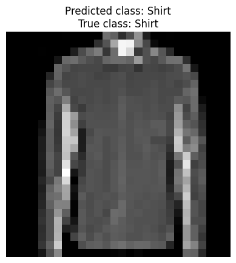
#visualisasi confusion matrix
from sklearn.metrics import classification_report, confusion_matrix
import itertools
def plot_confusion_matrix(cm, classes,
normalize=False,
title='Confusion matrix',
cmap=plt.cm.Blues):
"""
This function prints and plots the confusion matrix.
Normalization can be applied by setting `normalize=True`.
"""
if normalize:
cm = cm.astype('float') / cm.sum(axis=1)[:, np.newaxis]
print("Normalized confusion matrix")
else:
print('Confusion matrix, without normalization')
print(cm)
plt.imshow(cm, interpolation='nearest', cmap=cmap)
plt.title(title)
plt.colorbar()
tick_marks = np.arange(len(classes))
plt.xticks(tick_marks, classes, rotation=45)
plt.yticks(tick_marks, classes)
fmt = '.2f' if normalize else 'd'
thresh = cm.max() / 2.
for i, j in itertools.product(range(cm.shape[0]), range(cm.shape[1])):
plt.text(j, i, format(cm[i, j], fmt),
horizontalalignment="center",
color="white" if cm[i, j] > thresh else "black")
plt.tight_layout()
plt.ylabel('True label')
plt.xlabel('Predicted label')
# argument max
y_pred_labels = np.argmax(y_pred, axis=1)
cm = confusion_matrix(y_test, y_pred_labels, labels=np.arange(len(class_names)))
plot_confusion_matrix(cm, class_names, title='Confusion Matrix untuk Fashion MNIST', normalize=False)
plt.show()Confusion matrix, without normalization
[[863 3 21 36 3 3 65 0 6 0]
[ 1 973 0 20 4 0 1 0 1 0]
[ 21 3 808 13 118 0 37 0 0 0]
[ 22 6 18 892 44 0 14 0 4 0]
[ 1 1 79 27 859 0 31 0 2 0]
[ 0 1 0 2 0 944 0 25 2 26]
[157 4 110 37 116 1 571 0 4 0]
[ 0 0 0 0 0 15 0 964 0 21]
[ 8 1 16 6 5 2 4 3 955 0]
[ 1 0 0 0 0 7 0 46 0 946]]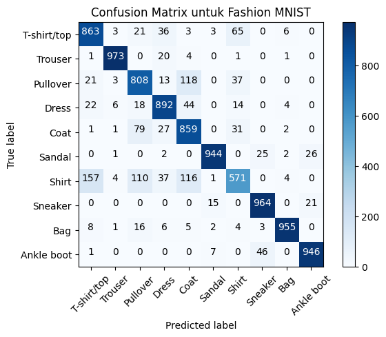
Pengantar CNN (Convolutional Neural Network)
Sebenarnya, menerima input gambar dengan teknik flatten itu kurang efektif.
Dengan dense layer, bahkan dua pixel yang sangat jauh itu juga terhubungkan, padahal seharusnya tidak berhubungan.
Karena itu juga, tidak ada penekanan hubungan antara dua pixel yang saling berdekatan.
Alangkah baiknya, ada teknik input gambar yang bisa mempertimbangkan bagaimana hubungan suatu pixel dengan pixel-pixel di sekitarnya saja, daripada dengan semua pixel.
Convolutional Neural Network (CNN) mencoba mengatasi hal ini. Ciri khasnya adalah adanya dua jenis layer baru:
convolution layer
pooling layer, biasanya max pooling
Kedua layer baru ini bersifat sparse, yaitu beberapa neuron terhubung dengan beberapa neuron saja, tidak dengan semuanya.
Gambar berikut ini membandingkan antara sparse layer dengan dense layer:

Sumber gambar: Goodfellow, et. al. (2016) hal. 337
Konsep convolution layer
Suatu convolution layer menghitung “konvolusi” (convolution).

Sumber gambar: Kotu, hal. 325
Perhitungan konvolusi selalu melibatkan suatu “filter”, yang nilai-nilainya menjadi parameter (seperti weights and biases) yang terus di-update selama proses training.

Sumber gambar: Aggarwal (2018) hal. 321
Contoh perhitungan menggunakan filter bisa dilihat di gambar berikut.

Sumber gambar: Aggarwal (2018) hal. 336
Ketika menghitung konvolusi, filter selalu digeser. Pergeseran filter ini sebenarnya tidak harus satu langkah. Bisa saja, misalnya, dua langkah. Banyaknya langkah ini disebut stride.

Sumber gambar: Kotu, hal. 328
Konsep pooling layer
Daripada menghitung konvolusi, pooling hanya menghitung statistik sederhana saja. Biasanya menghitung maksimum, yang disebut max pooling.

Sumber gambar: Kotu, hal. 328
LeNet-5: salah satu arsitektur CNN pertama
Note: aslinya, LeNet-5 menggunakan average pooling, yaitu menghitung rata-rata, tidak seperti max pooling yang memilih maksimum.

Sumber gambar: Aggarwal (2018) hal. 41
Arsitektur LeNet-5 menggunakan Keras bisa disusun sebagai berikut:
lenet5 = keras.Sequential()
lenet5.add(keras.layers.Conv2D(
input_shape = (32, 32, 1),
kernel_size = (5, 5),
filters = 6,
activation = keras.activations.sigmoid
)) # menghasilkan C1 di gambar: ukuran 28 x 28 x 6
lenet5.add(keras.layers.AveragePooling2D(
pool_size = (2, 2),
strides = 2
)) # menghasilkan S2 di gambar: ukuran 14 x 14 x 6
lenet5.add(keras.layers.Conv2D(
kernel_size = (5, 5),
filters = 16,
activation = keras.activations.sigmoid
)) # menghasilkan C3 di gambar: ukuran 10 x 10 x 16
lenet5.add(keras.layers.AveragePooling2D(
pool_size = (2, 2),
strides = 2
)) # menghasilkan S4 di gambar: ukuran 5 x 5 x 16
lenet5.add(keras.layers.Flatten())
# menjadi C5 di gambar, dengan 400 neuron
lenet5.add(keras.layers.Dense(
units = 120, activation = keras.activations.sigmoid
))
lenet5.add(keras.layers.Dense(
units = 84, activation = keras.activations.sigmoid
))
lenet5.add(keras.layers.Dense(
units = 10, activation = keras.activations.softmax
))/usr/local/lib/python3.12/dist-packages/keras/src/layers/convolutional/base_conv.py:113: UserWarning: Do not pass an `input_shape`/`input_dim` argument to a layer. When using Sequential models, prefer using an `Input(shape)` object as the first layer in the model instead.
super().__init__(activity_regularizer=activity_regularizer, **kwargs)keras.utils.plot_model(
lenet5,
show_shapes = True,
dpi=90,
show_layer_activations = True,
to_file = "keras_sequential_lenet5.png"
)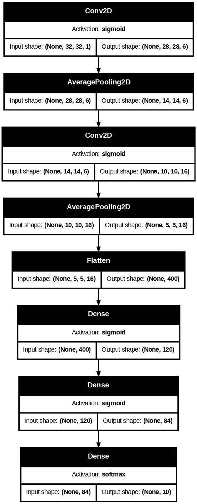
X_train.shape(50000, 28, 28)X_train_cnn = np.expand_dims(X_train, axis=-1)
X_test_cnn = np.expand_dims(X_test, axis=-1)
X_val_cnn = np.expand_dims(X_val, axis=-1)X_train_cnn = tf.image.resize(X_train_cnn, [32, 32]).numpy()
X_test_cnn = tf.image.resize(X_test_cnn, [32, 32]).numpy()
X_val_cnn = tf.image.resize(X_val_cnn, [32, 32]).numpy()print(X_train_cnn.shape)
print(X_test_cnn.shape)
print(X_val_cnn.shape)(50000, 32, 32, 1)
(10000, 32, 32, 1)
(10000, 32, 32, 1)lenet5.compile(
optimizer = keras.optimizers.Adam(learning_rate = 0.001),
loss = keras.losses.SparseCategoricalCrossentropy(),
metrics = [keras.metrics.CategoricalAccuracy()]
)# 6. Train
history2 = lenet5.fit(X_train_cnn, y_train, validation_data=(X_val_cnn, y_val),
epochs=10, batch_size=256)Epoch 1/10
196/196 ━━━━━━━━━━━━━━━━━━━━ 37s 189ms/step - categorical_accuracy: 0.0558 - loss: 1.1464 - val_categorical_accuracy: 0.0733 - val_loss: 0.8930
Epoch 2/10
196/196 ━━━━━━━━━━━━━━━━━━━━ 45s 208ms/step - categorical_accuracy: 0.0665 - loss: 0.8115 - val_categorical_accuracy: 0.0696 - val_loss: 0.7595
Epoch 3/10
196/196 ━━━━━━━━━━━━━━━━━━━━ 32s 161ms/step - categorical_accuracy: 0.0652 - loss: 0.7077 - val_categorical_accuracy: 0.0700 - val_loss: 0.6811
Epoch 4/10
196/196 ━━━━━━━━━━━━━━━━━━━━ 24s 123ms/step - categorical_accuracy: 0.0702 - loss: 0.6523 - val_categorical_accuracy: 0.0711 - val_loss: 0.6329
Epoch 5/10
196/196 ━━━━━━━━━━━━━━━━━━━━ 24s 121ms/step - categorical_accuracy: 0.0638 - loss: 0.6123 - val_categorical_accuracy: 0.0717 - val_loss: 0.6004
Epoch 6/10
196/196 ━━━━━━━━━━━━━━━━━━━━ 38s 192ms/step - categorical_accuracy: 0.0677 - loss: 0.5786 - val_categorical_accuracy: 0.0712 - val_loss: 0.5721
Epoch 7/10
196/196 ━━━━━━━━━━━━━━━━━━━━ 25s 127ms/step - categorical_accuracy: 0.0605 - loss: 0.5524 - val_categorical_accuracy: 0.0694 - val_loss: 0.5591
Epoch 8/10
196/196 ━━━━━━━━━━━━━━━━━━━━ 30s 155ms/step - categorical_accuracy: 0.0660 - loss: 0.5286 - val_categorical_accuracy: 0.0699 - val_loss: 0.5263
Epoch 9/10
196/196 ━━━━━━━━━━━━━━━━━━━━ 24s 121ms/step - categorical_accuracy: 0.0614 - loss: 0.5084 - val_categorical_accuracy: 0.0690 - val_loss: 0.5110
Epoch 10/10
196/196 ━━━━━━━━━━━━━━━━━━━━ 43s 133ms/step - categorical_accuracy: 0.0604 - loss: 0.4929 - val_categorical_accuracy: 0.0706 - val_loss: 0.4977pd.DataFrame(history2.history).to_csv("./keras_sequential_history2.csv", index=False)Silakan download kalau mau menyocokkan/membandingkan dengan modul: keras_sequential_history2.csv
history2_df = pd.read_csv("./keras_sequential_history2.csv")plt.plot(history2_df["loss"], label = "training loss")
plt.plot(history2_df["val_loss"], label = "validation loss")
plt.xlabel("epoch")
plt.legend()
plt.show()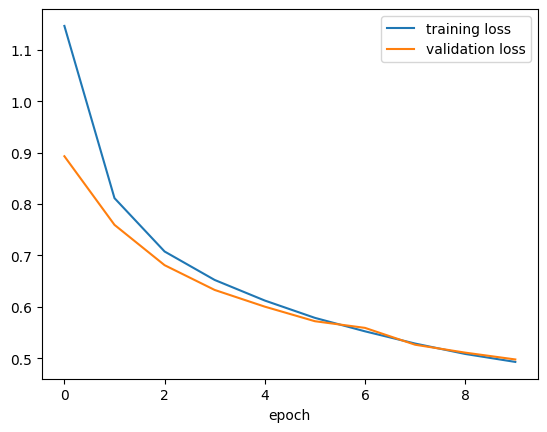
lenet5.save("./keras_sequential_lenet5.keras")Hasil Prediksi
y_pred2 = lenet5.predict(X_test_cnn)313/313 ━━━━━━━━━━━━━━━━━━━━ 2s 7ms/stepy_pred_labels2 = np.argmax(y_pred2, axis=1)#@title Slider to look for some prediction examples {run: "auto"}
idx = 2099 #@param {type:"slider", min:0, max:9999, step:1}
plt.imshow(X_test_cnn[idx], cmap='gray')
plt.title(
f"Predicted class: {class_names[int(np.argmax(y_pred2[idx]))]}\n" +
f"True class: {class_names[y_test[idx]]}"
)
plt.axis('OFF')
plt.show()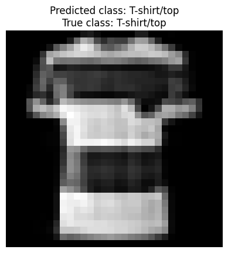
cm2 = confusion_matrix(y_test, y_pred_labels2, labels=np.arange(len(class_names)))
plot_confusion_matrix(cm2, class_names, title='Confusion Matrix untuk Fashion MNIST', normalize=False)
plt.show()Confusion matrix, without normalization
[[870 3 25 52 5 1 30 0 14 0]
[ 5 953 6 27 4 0 4 0 1 0]
[ 13 2 739 9 150 0 78 0 9 0]
[ 49 24 19 847 18 1 38 0 4 0]
[ 3 2 161 60 701 1 66 0 6 0]
[ 0 0 0 2 0 949 0 35 3 11]
[281 3 291 41 155 0 203 0 26 0]
[ 0 0 0 0 0 48 0 933 0 19]
[ 5 2 19 8 2 3 14 4 942 1]
[ 0 0 0 0 0 28 0 65 1 906]]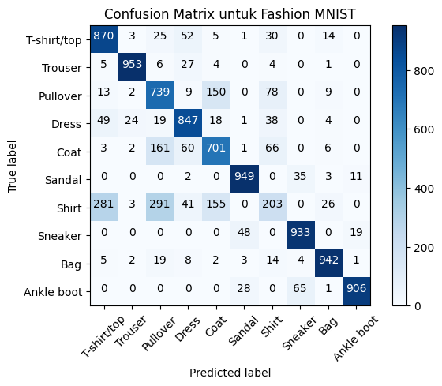
Transfer learning
import tensorflow as tf
from keras import layers, models, applicationsX_train_tl = np.stack((X_train,) * 3, axis=-1)
X_test_tl = np.stack((X_test,) * 3, axis=-1)
X_val_tl = np.stack((X_val,) * 3, axis=-1)X_train_tl.shape(50000, 28, 28, 3)X_train_tl = tf.image.resize(X_train_tl, [32, 32]).numpy()
X_test_tl = tf.image.resize(X_test_tl, [32, 32]).numpy()
X_val_tl = tf.image.resize(X_val_tl, [32, 32]).numpy()X_train_tl.shape(50000, 32, 32, 3)keras.backend.clear_session()# ResNet-50 Model
base_model = applications.ResNet50(
weights='imagenet',
include_top=False,
input_shape=(32, 32, 3)
)
# Freeze base layers for initial training
base_model.trainable = False
model2 = models.Sequential([
base_model,
layers.GlobalAveragePooling2D(),
layers.Dense(64, activation='relu'),
layers.Dropout(0.3),
layers.Dense(10, activation='softmax')
])model2.summary()Model: "sequential"
┏━━━━━━━━━━━━━━━━━━━━━━━━━━━━━━━━━┳━━━━━━━━━━━━━━━━━━━━━━━━┳━━━━━━━━━━━━━━━┓ ┃ Layer (type) ┃ Output Shape ┃ Param # ┃ ┡━━━━━━━━━━━━━━━━━━━━━━━━━━━━━━━━━╇━━━━━━━━━━━━━━━━━━━━━━━━╇━━━━━━━━━━━━━━━┩ │ resnet50 (Functional) │ (None, 1, 1, 2048) │ 23,587,712 │ ├─────────────────────────────────┼────────────────────────┼───────────────┤ │ global_average_pooling2d │ (None, 2048) │ 0 │ │ (GlobalAveragePooling2D) │ │ │ ├─────────────────────────────────┼────────────────────────┼───────────────┤ │ dense (Dense) │ (None, 64) │ 131,136 │ ├─────────────────────────────────┼────────────────────────┼───────────────┤ │ dropout (Dropout) │ (None, 64) │ 0 │ ├─────────────────────────────────┼────────────────────────┼───────────────┤ │ dense_1 (Dense) │ (None, 10) │ 650 │ └─────────────────────────────────┴────────────────────────┴───────────────┘
Total params: 23,719,498 (90.48 MB)
Trainable params: 131,786 (514.79 KB)
Non-trainable params: 23,587,712 (89.98 MB)
keras.utils.plot_model(
model2,
show_shapes = True,
dpi=90,
show_layer_activations = True,
to_file = "keras_sequential_resnet50.png"
)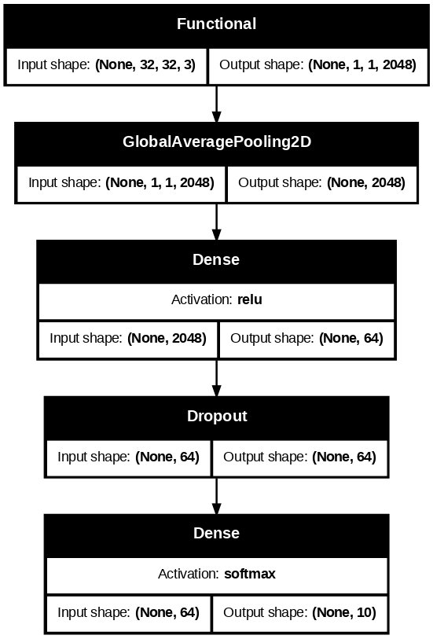
# 5. Compile
model2.compile(
optimizer='adam',
loss='sparse_categorical_crossentropy',
metrics=['accuracy']
)
# 6. Train
history3 = model2.fit(X_train_tl, y_train, validation_data=(X_val_tl, y_val),
epochs=5, batch_size=256)Epoch 1/5
196/196 ━━━━━━━━━━━━━━━━━━━━ 227s 1s/step - accuracy: 0.3986 - loss: 1.6395 - val_accuracy: 0.6404 - val_loss: 1.1456
Epoch 2/5
196/196 ━━━━━━━━━━━━━━━━━━━━ 193s 985ms/step - accuracy: 0.5698 - loss: 1.1568 - val_accuracy: 0.6851 - val_loss: 0.9344
Epoch 3/5
196/196 ━━━━━━━━━━━━━━━━━━━━ 206s 1s/step - accuracy: 0.6227 - loss: 1.0221 - val_accuracy: 0.6952 - val_loss: 0.8584
Epoch 4/5
196/196 ━━━━━━━━━━━━━━━━━━━━ 181s 925ms/step - accuracy: 0.6518 - loss: 0.9474 - val_accuracy: 0.7220 - val_loss: 0.7876
Epoch 5/5
196/196 ━━━━━━━━━━━━━━━━━━━━ 278s 1s/step - accuracy: 0.6640 - loss: 0.9065 - val_accuracy: 0.7268 - val_loss: 0.7639pd.DataFrame(history3.history).to_csv("./keras_sequential_history3.csv", index=False)Silakan download kalau mau menyocokkan/membandingkan dengan modul: keras_sequential_history3.csv
history3_df = pd.read_csv("./keras_sequential_history3.csv")plt.plot(history3_df["loss"], label = "training loss")
plt.plot(history3_df["val_loss"], label = "validation loss")
plt.xlabel("epoch")
plt.legend()
plt.show()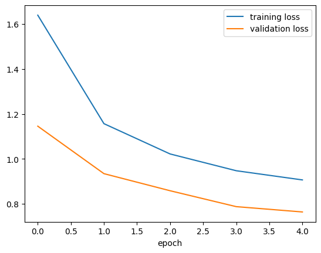
model2.save("./Resnet50_transfer_learn.keras")Hasil Prediksi
y_pred3 = model2.predict(X_test_tl)313/313 ━━━━━━━━━━━━━━━━━━━━ 45s 133ms/step#@title Slider to look for some prediction examples {run: "auto"}
idx = 2099 #@param {type:"slider", min:0, max:9999, step:1}
plt.imshow(X_test_tl[idx], cmap='gray')
plt.title(
f"Predicted class: {class_names[int(np.argmax(y_pred3[idx]))]}\n" +
f"True class: {class_names[y_test[idx]]}"
)
plt.axis('OFF')
plt.show()y_pred_labels3 = np.argmax(y_pred3, axis=1)
cm3 = confusion_matrix(y_test, y_pred_labels3, labels=np.arange(len(class_names)))
plot_confusion_matrix(cm3, class_names, title='Confusion Matrix untuk Fashion MNIST', normalize=False)
plt.show()Confusion matrix, without normalization
[[680 33 23 66 34 3 116 0 45 0]
[ 3 935 9 28 13 0 10 0 2 0]
[ 28 3 541 8 219 0 173 0 28 0]
[ 53 103 8 680 72 1 73 0 10 0]
[ 15 4 190 66 588 1 122 0 14 0]
[ 2 0 0 1 0 840 0 95 11 51]
[187 22 213 45 167 0 327 0 39 0]
[ 0 0 0 0 0 79 0 792 1 128]
[ 6 0 9 6 12 12 32 8 910 5]
[ 1 0 0 2 0 8 0 36 0 953]]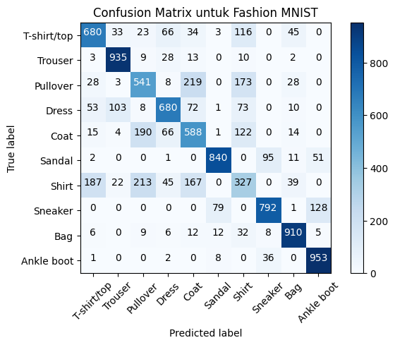
Referensi
Sumber gambar
Aggarwal, C. Charu. 2018. Neural Networks and Deep Learning: A Textbook. Edisi Pertama. Springer.
Goodfellow, Ian; Bengio, Yoshua; & Courville, Aaron. 2016. Deep Learning. MIT Press.
Kotu, Data Science Concepts and Practice